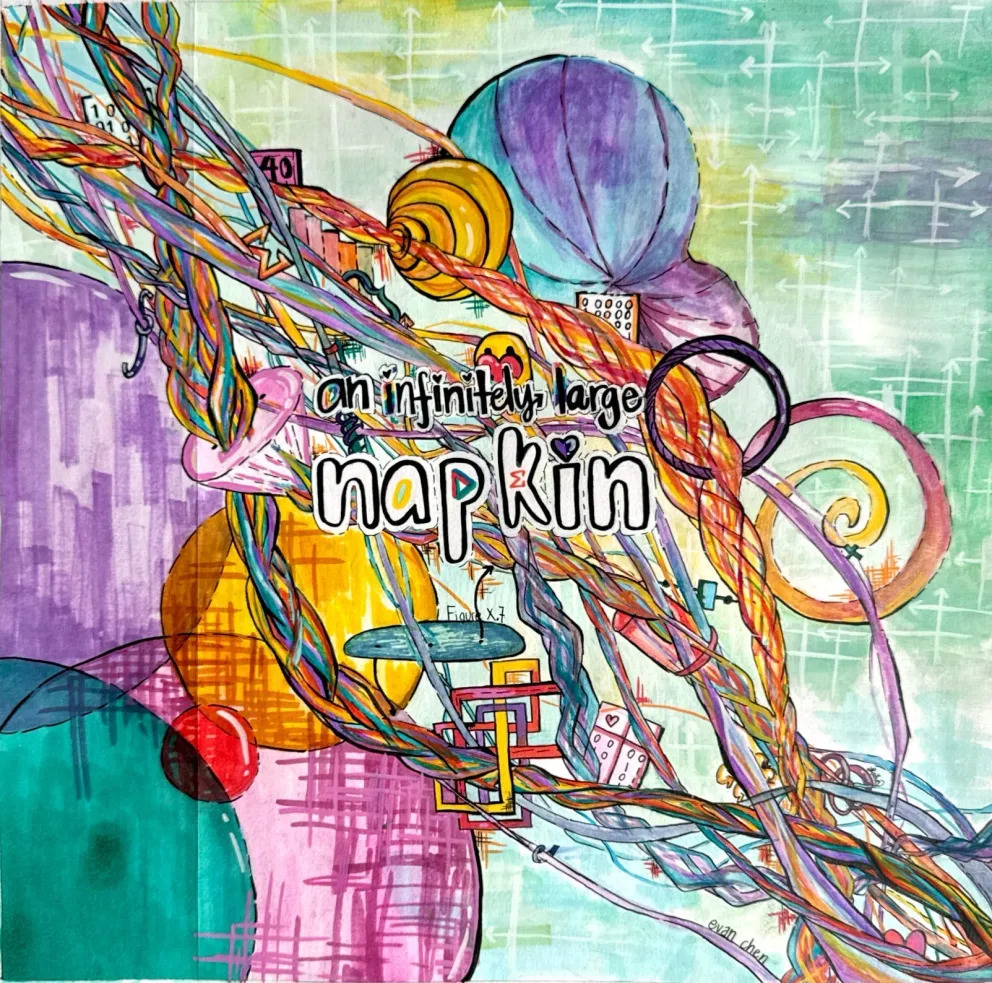

[chapter]chapter 0 Napkin, by Evan Chen (v1.6.20250220) 0 chapterprefix [beforeskip=0.5em]chapter partprefix mdblueboxroundcorner = 10pt, linewidth=1pt, skipabove=12pt, innerbottommargin=9pt, skipbelow=2pt, nobreak=true, linecolor=blue, backgroundcolor=TealBlue!5, mdredboxlinewidth=0.5pt, skipabove=12pt, frametitleaboveskip=5pt, frametitlebelowskip=0pt, skipbelow=2pt, frametitlefont=, innertopmargin=4pt, innerbottommargin=8pt, linecolor=RawSienna, backgroundcolor=Salmon!5, mdgreenboxskipabove=8pt, linewidth=2pt, rightline=false, leftline=true, topline=false, bottomline=false, linecolor=ForestGreen, backgroundcolor=ForestGreen!5, mdblackboxskipabove=8pt, linewidth=3pt, rightline=false, leftline=true, topline=false, bottomline=false, linecolor=black, backgroundcolor=RedViolet!5!gray!5, hintansweritemtex/backmatter/all-hints solansweritemtex/backmatter/all-solns [tocnumwidth=4.2em]part [tocpagenumberwidth=2.2em,tocnumwidth=4.2em]chapter [tocpagenumberwidth=2.2em,tocnumwidth=2.8em]section import extras; size(6cm); usepackage(”amsmath”); usepackage(”amssymb”); defaultpen(fontsize(11pt)); settings.tex = ”latex”; settings.outformat = ”pdf”; [final]shorthand label [strwidth=2,strside=left]labelname [strwidth=2,strside=right]year references.bib images.bib englishbackrefpage = cited p., backrefpages = cited pp. parttocchapter parttocsection parttocsubsection [n] https://web.evanchen.cc/napkin.html

When introduced to a new idea, always ask why you should care.
Do not expect an answer right away, but demand one eventually.
— Ravi Vakil [ref:vakil]
If you like this book and want to support me, please consider buying me a coffee!
For Brian and Lisa, who finally got me to write it.
© 2025 Evan Chen.
Text licensed under
CC-by-SA-4.0.
Source files licensed under
GNU GPL v3.
This is (still!) an incomplete draft.
Please send corrections, comments, pictures of kittens,
etc. to evan@evanchen.cc,
or pull-request at https://github.com/vEnhance/napkin.
Last updated February 20, 2025.